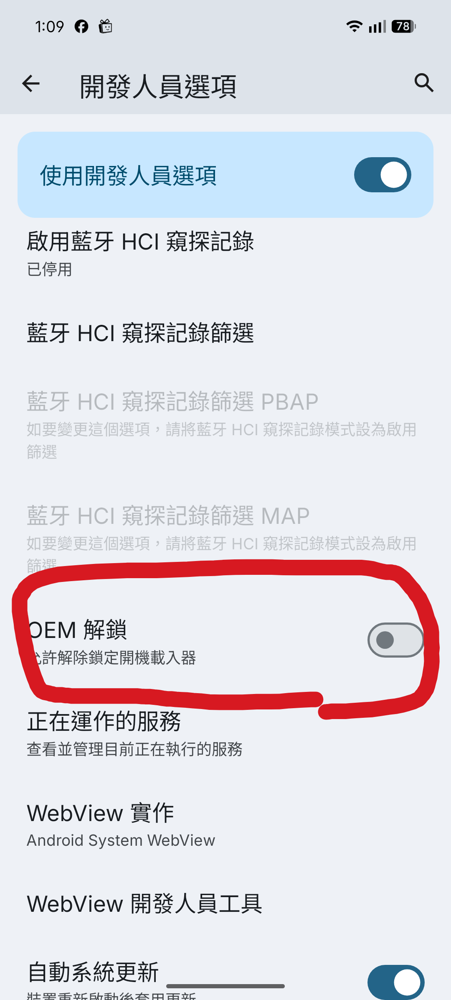
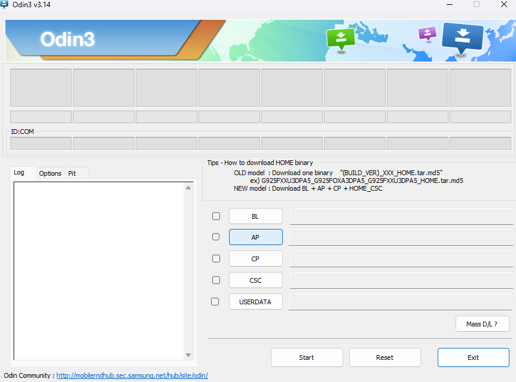

為什麼要刷機
刷機在以前的年代，通常是為了取得更高的系統權限 已解決一些如：性能不足、刪除內建軟體、幫停止更新的手機裝上新系統之類的
但現在手機大多已經不需要透過這種方法解決問題(或根本不行) 所以現在大部分刷機就只是去體驗一下其他系統或是單純刷好玩的
刷機在以前的年代，通常是為了取得更高的系統權限 已解決一些如：性能不足、刪除內建軟體、幫停止更新的手機裝上新系統之類的
但現在手機大多已經不需要透過這種方法解決問題(或根本不行) 所以現在大部分刷機就只是去體驗一下其他系統或是單純刷好玩的
刷機的每個過程都有可能讓你的手機變成一塊毫無功能的黑色長方體 而且會清空手機內的所有資料 大部分廠商也會破保固
| 廠商 | 是否可解鎖刷機(正常手段) |
|---|---|
| 非常適合 | |
| Nothing | 適合 |
| OnePlus | 適合(不破保) |
| 小米 | 非出廠搭載HyperOS適合 |
| 三星 | OneUI 8以前適合 |
| ASUS | 無法(解鎖通路已關閉) |
| OPPO/Realme | 無法 |
| 其餘陸廠 | 無法 |
| 未列出 | 自己查 |
Bootloader 簡稱BL(not boy love)，其主要功能類似於x86電腦上的BIOS，在開機時進行硬體初始化並載入引導。
如果要進行刷機，必須先解鎖手機的BL 讓我們擁有更大的改造空間。
adb、手機驅動程式
MiFlash
1.進入設定 關於手機
2.瘋狂點擊版本號碼 開啟開發者模式 進入後開啟oem unlock

3.將手機關機 然後按住音量-跟開機鍵開機 進到Fastboot Mode
4.在adb中輸入以下指令 沒有adb就去裝
fastboot devices
fastboot flashing unlock
5.使用音量鍵將螢幕上的選項切換至unlock bootloader 然後開機鍵確認
同Pixel
1.進入開發者選項開啟oem unlock(同Pixel)
2.將手機關機
3.打開電腦瀏覽器 進入CF root
4.下載你的裝置對應的檔案 解壓縮後打開odin.exe

5.將手機插上電腦 按住音量-跟開機鍵跟home開機到download mode
6.確認odin抓到手機(那個COM有東西)後 按一下AP 選擇剛剛解壓縮的資料夾內副檔名為md5的檔案(也可能是tar)
7.按下start讓手機開始跑 之後自己重開機 如果有出現一個叫Super SU的APP表示成功了
1.進入開發者選項開啟oem unlock(同Pixel)
2.關機 並且插上電源(建議電腦 但其實一般插頭也行) 按住音量-跟開機鍵開機
3.你會進入一個綠綠的畫面 然後按住音量+就可以解鎖了
1.進入開發者選項開啟oem unlock(同Pixel)、打開裝置解鎖狀態綁定小米帳號(需sim卡)
2.等待168小時(7天)
3.打開電腦瀏覽器 下載小米解鎖工具 然後解壓縮
4.將手機關機 按住音量-跟開機鍵開機到fastboot
5.接上電腦 進到剛剛解壓縮的資料夾打開miflash_unlock
6.登入你7天前綁定的帳號 然後按下解鎖(這會清空手機內所有資料)